01
Upoznajemo se
Razgovaramo o razvoju djeteta, onome što ste primijetili i svemu što vas trenutno brine.
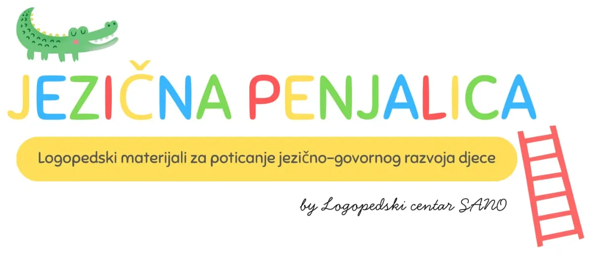
Obavijest o slanju tiskanih materijala
Dragi roditelji i kolege, hvala vam na svim narudžbama.
Sve narudžbe tiskanih materijala zaprimljene tijekom našeg godišnjeg odmora slat ćemo od 17. kolovoza, redoslijedom zaprimanja.
Digitalni materijali dostupni su odmah nakon kupnje i mogu se preuzeti bez čekanja.
Hvala vam na razumijevanju i povjerenju.
Stručna logopedska procjena i terapija za djecu predškolske i školske dobi, uz individualan pristup svakom djetetu.
Mali glasovi, veliki koraci.
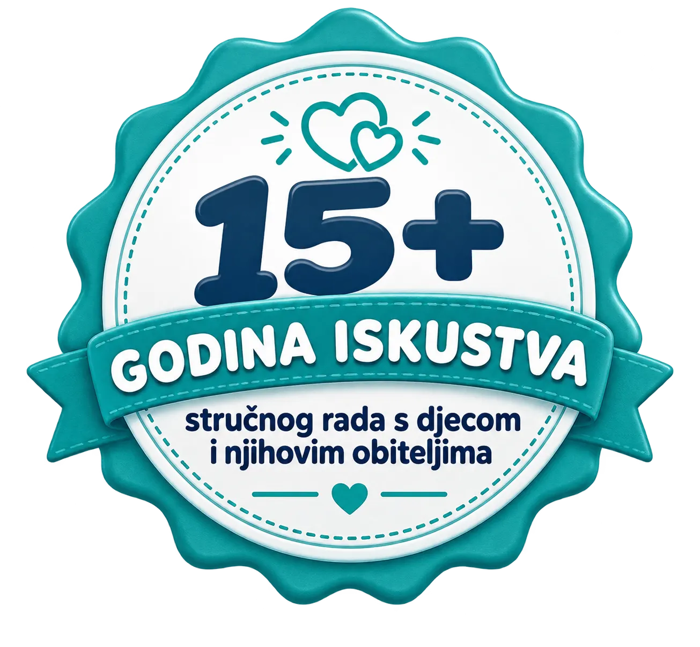
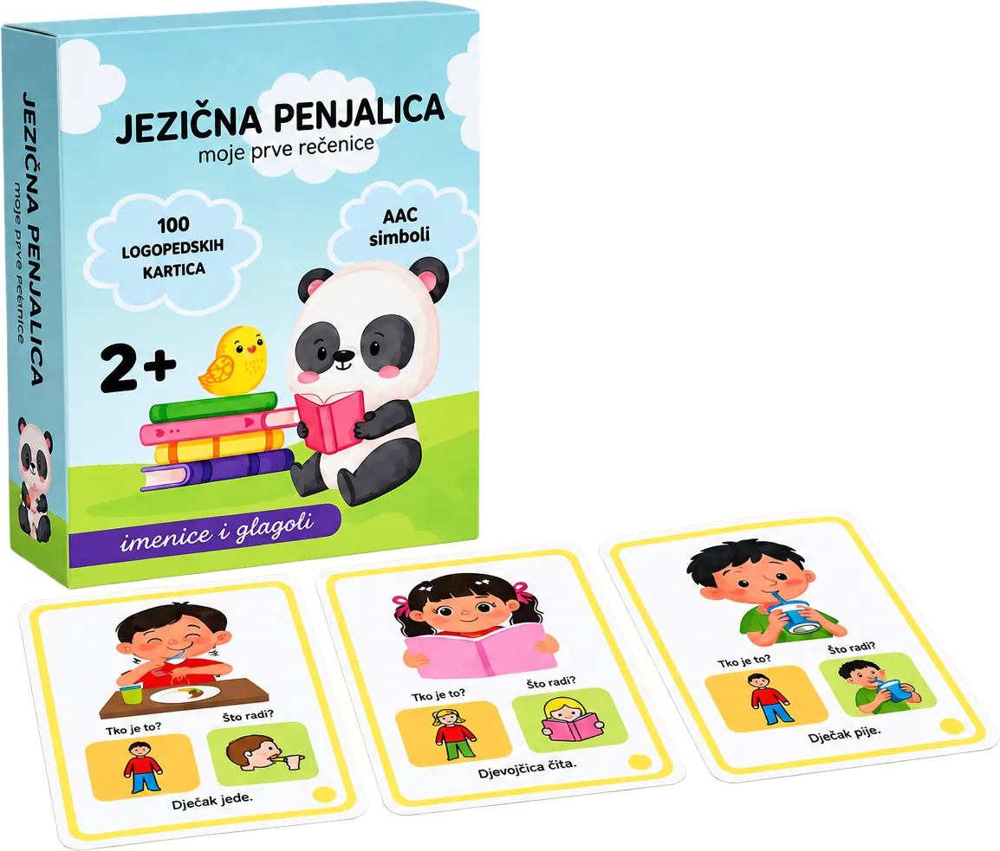
Jezična penjalica
Prve rečenice kroz igru. AAC simboli koje deca vole, logopedi odobravaju.
Svako dijete razvija se svojim tempom, no postoje znakovi na koje vrijedi obratiti pažnju. Rano prepoznavanje poteškoća omogućuje lakšu podršku i bolje rezultate.
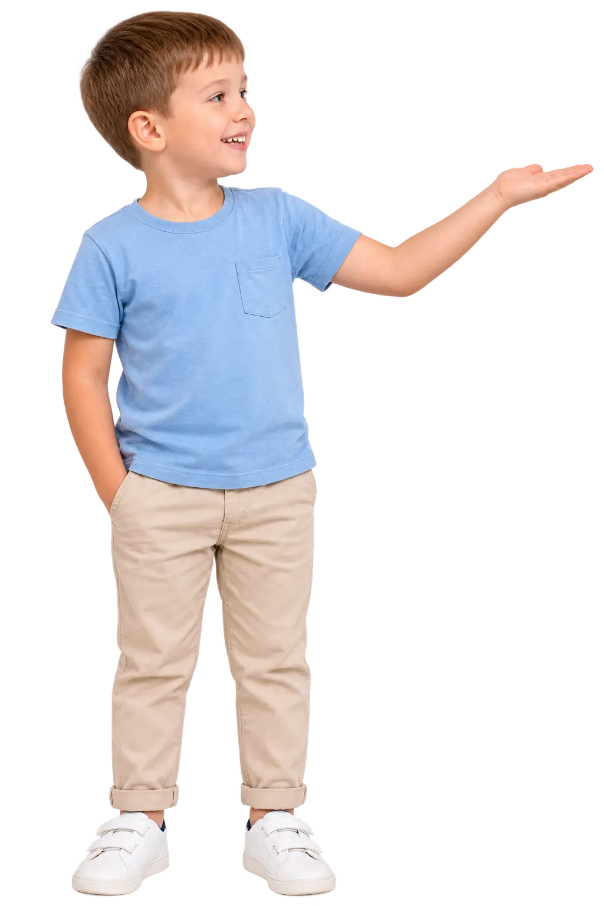
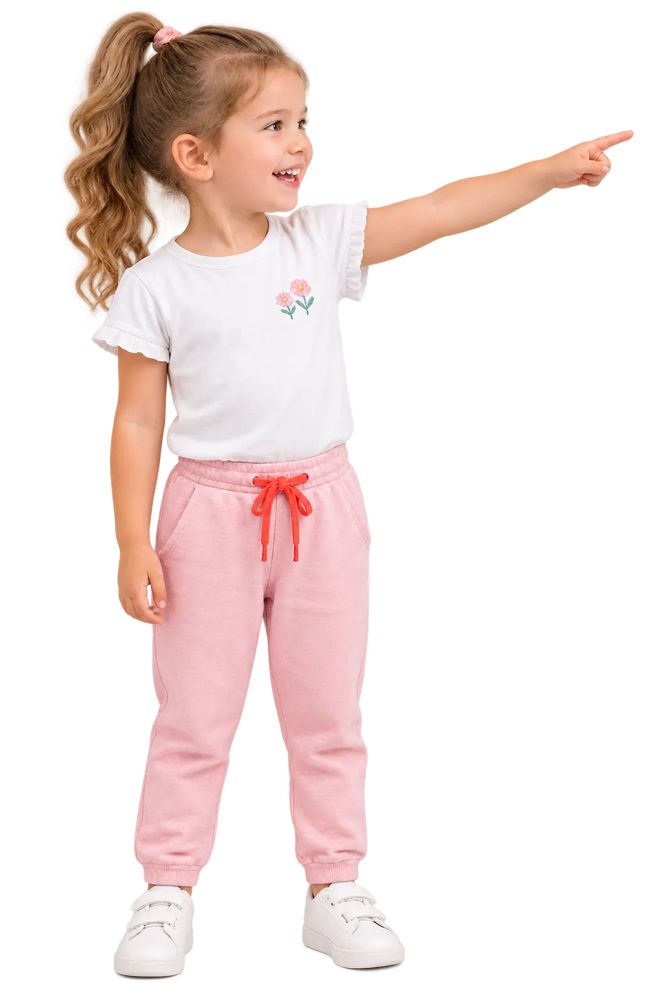
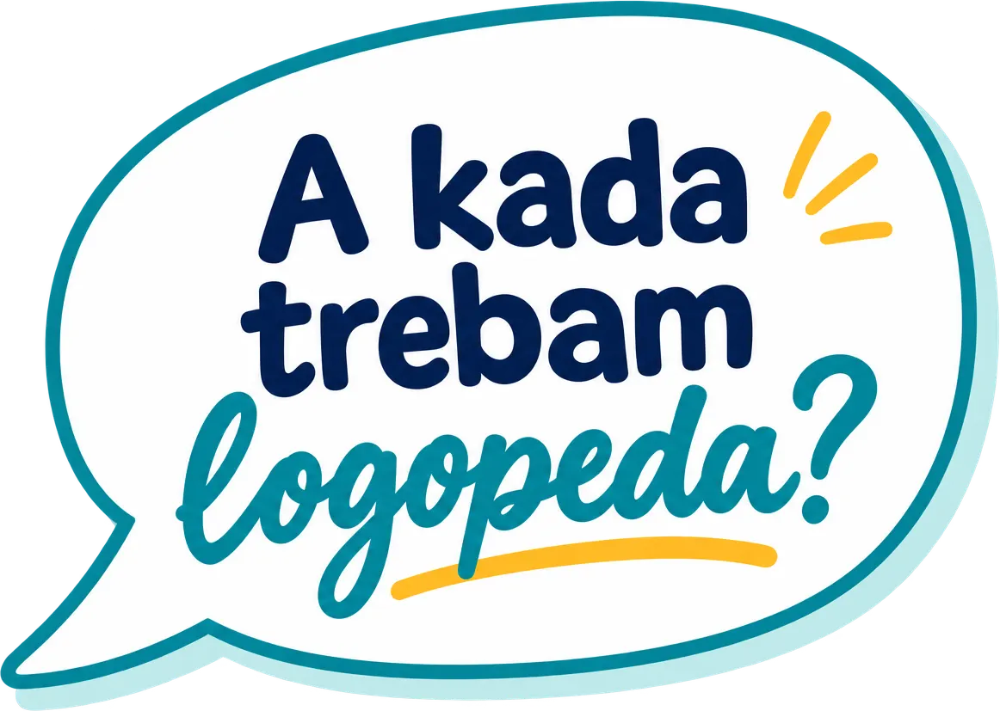
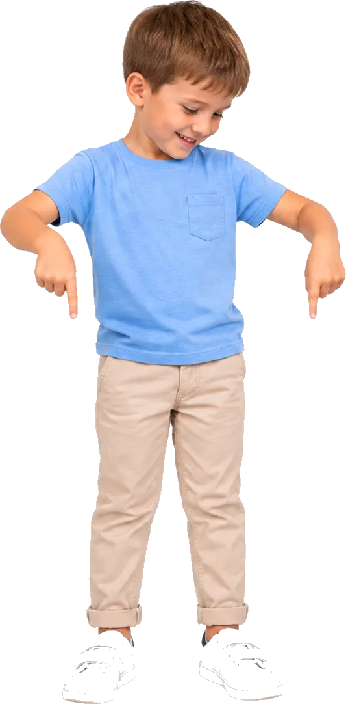
Ako niste sigurni odgovara li razvoj vašeg djeteta dobi, javite nam se za savjet.
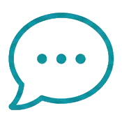
Rani komunikacijski i jezično-govorni razvojOdaberite dob djeteta i pogledajte na koje je znakove korisno obratiti pažnju.
Preporučuje se potražiti savjet logopeda ako dijete:
{{ g.note }}
Prepoznajete nešto s liste?
Jedan signal ne znači dijagnozu. Razgovor s logopedom najbrži je način da dobijete jasan odgovor je li potrebna procjena.
Rezervirajte terminIli nas pitajte na kontaktu.
Od procjene do napretka pratimo dijete u svakom koraku govorno-jezičnog razvoja.

Bez nepoznanica i žurbe. Znate što možete očekivati u svakom koraku.
Tim iskusnih logopedinja prati razvoj govora, jezika i komunikacije kod djece predškolske i školske dobi. Svako dijete napreduje svojim tempom, pa je svaka terapija skrojena za njega, a roditelji su nam ravnopravni suradnici.
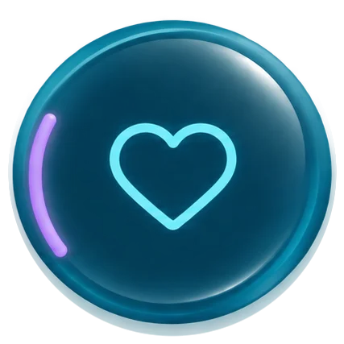
Individualni planProcjena i terapija prilagođene potrebama vašeg djeteta.Ne oslanjamo se samo na dojam. Kada je primjereno dobi i teškoći, koristimo standardizirane mjerne instrumente kako bismo dobili što objektivniju sliku djetetovih sposobnosti.
Zatražite primjer nalazaZa roditelje: Provjeravamo koliko riječi i uputa dijete razumije te kako se samo izražava, pa vidimo je li to očekivano za njegovu dob (1,5–7 god.).
Za roditelje: Provjeravamo razumije li dijete rečenice tipa „Dječak kojeg je gurnula djevojčica sjedi“, dakle tko je kome što učinio.
Za roditelje: Dijete pokazuje sliku za izgovorenu riječ, pa vidimo koliko mu je rječnik bogat u odnosu na vršnjake.
Za roditelje: Za najmanju djecu: pratimo geste, prve riječi i način na koji dijete traži i dijeli pozornost s vama.
Za roditelje: Prije škole provjeravamo prepoznaje li dijete glasove u riječima i slova, što je temelj za čitanje i pisanje.
Ne oslanjamo se samo na dojam. Kada je primjereno dobi i teškoći, koristimo standardizirane mjerne instrumente kako bismo dobili što objektivniju sliku djetetovih sposobnosti.
Objektivna procjena djetetovih sposobnosti u odnosu na vršnjake iste dobi.
Priznati terapijski pristupi za koje su naše logopedinje dodatno educirane.
Tri logopedinje, jedan zajednički pristup: stručnost, strpljenje i podrška prilagođena svakom djetetu.
Niste sigurni kome se obratiti?
Javite nam što ste primijetili, a mi ćemo vas usmjeriti.
Mjesto po mjeri djece: svijetlo, toplo i puno poticaja za igru i učenje.
Iskustva obitelji koje su nam povjerile razvoj svog djeteta.
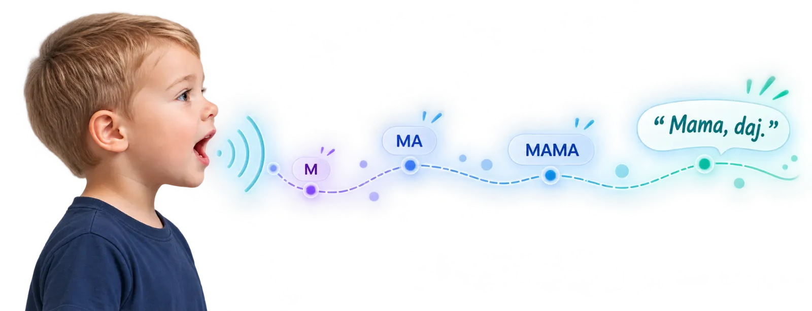
Sve pohvale za ovaj kabinet. Moje dijete je uključeno u logopedsku terapiju zadnjih mjeseci. Rade detaljno, sistematično, a radni materijali su uvijek prilagođeni njegovim potrebama i interesu. Predan rad i veliko znanje. Već sada vidim ogroman skok u govoru i razumijevanju kod svog djeteta. Hvala Vam!
Mladi tim izuzetnih strucnjaka, predivnih i strpljivih u radu s djecom. Imali smo divno iskustvo, za svaku preporuku.
Marina GeziGoogle recenzija · prije 7 godinaVježbenice su zaista fantastične ne zna se koja je bolja od koje sad mi je žao što nisam uzela sve 3 no dobro. Imam predškolsku kod kuće i odgojitelj sam u skupini predškolaraca znači iskoristiti ćemo materijale sigurno sve već danas krećemo🤗.
Ivana T.odgojiteljica · vježbeniceUpravo stigla jezicna penjalica i samo cu reci - wow
Petra M.logopedinjaKartice su odlicne, jako su mu zanimljive i vec je rekao jedan glagol bez previse poticanja. Inace ih zna reci tri, sad i cetvrti. Puno hvala
Dora K.mama dječaka · Jezična penjalicaPostovana koleginice, izuzetan je prirucnik. Veoma smo odusevljene i saljemo Vam veliki pozdrav i logopedskog kabineta
Jelena S.logopedski kabinetNajbolje 👏
BTGoogle recenzija · prije godinu danaLjubazni, susretljivi, profesionalni, ako želite najbolje za svoje dijete, moja topla preporuka za Udrugu PRO SANO !
Goga GmajničkiGoogle recenzija · prije 3 godineVrhunski pristup i za svaku pohvalu!!!
Josip BagićGoogle recenzija · prije 3 godineMladi tim izuzetnih strucnjaka, predivnih i strpljivih u radu s djecom. Imali smo divno iskustvo, za svaku preporuku.
Marina GeziGoogle recenzija · prije 7 godinaMladi tim izuzetnih strucnjaka, predivnih i strpljivih u radu s djecom. Imali smo divno iskustvo, za svaku preporuku.
Kartice su odlicne, jako su mu zanimljive i vec je rekao jedan glagol bez previse poticanja. Inace ih zna reci tri, sad i cetvrti. Puno hvala
Ljubazni, susretljivi, profesionalni, ako želite najbolje za svoje dijete, moja topla preporuka za Udrugu PRO SANO !
Vježbenice su zaista fantastične ne zna se koja je bolja od koje sad mi je žao što nisam uzela sve 3 no dobro. Imam predškolsku kod kuće i odgojitelj sam u skupini predškolaraca znači iskoristiti ćemo materijale sigurno sve već danas krećemo🤗.
Postovana koleginice, izuzetan je prirucnik. Veoma smo odusevljene i saljemo Vam veliki pozdrav i logopedskog kabineta
Vrhunski pristup i za svaku pohvalu!!!
Jasne cijene i preporuka usluge tek nakon što upoznamo potrebe vašeg djeteta.
Rezervirani termini namijenjeni su isključivo Vašem djetetu te se smatraju unaprijed dogovorenima. U slučaju spriječenosti dolaska potrebno je obavijestiti centar najmanje 24 sata unaprijed. · Cjenik važeći od 1. kolovoza 2026. · PDV uključen
Kratki odgovori na pitanja koja roditelji najčešće postavljaju prije procjene ili početka terapije.
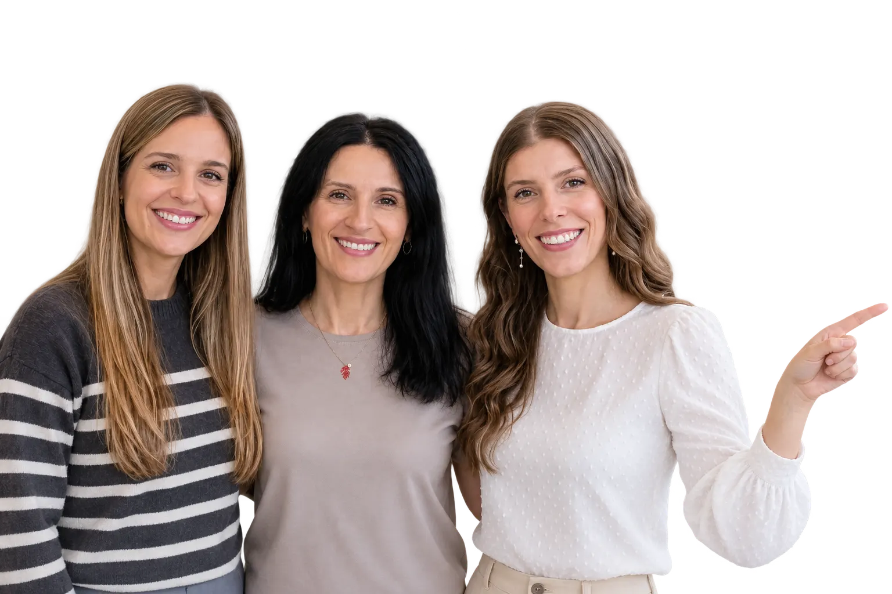
Javite nam se i rado ćemo pomoći prije prvog dolaska.
Pošaljite upit →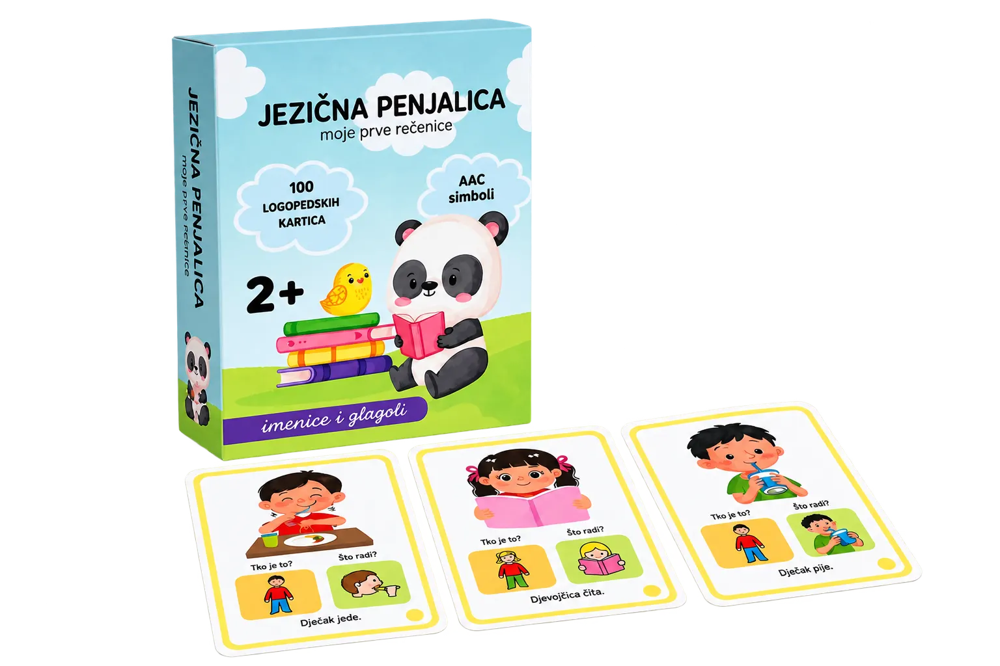
Opišite nam što ste primijetili kod svog djeteta. Reći ćemo vam ima li smisla dogovoriti procjenu i što preporučujemo dalje.
Vaš upit je zaprimljen. Javit ćemo vam se u najkraćem roku.
Tim SANO
Kartu učitavamo preko Google Mapsa (postavlja kolačiće) tek uz Vaš pristanak.
Nužni kolačići potrebni su za rad stranice. Ugrađenu Google kartu i njezine kolačiće učitavamo tek uz Vaš pristanak. Možete prihvatiti ili odbiti.